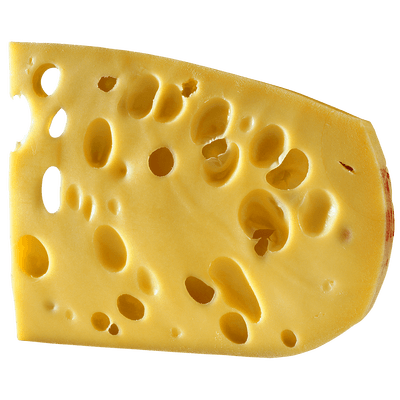
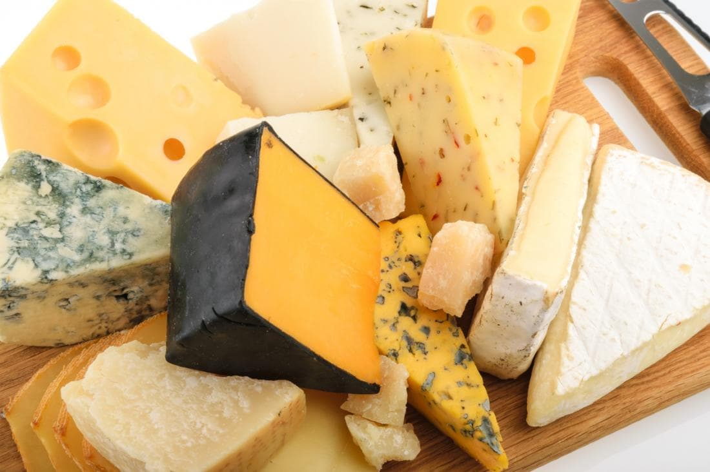

Що таке сир в Україні?
Для багатьох людей – це просто продукт, яким можна задовільнити банальну потребу «їсти». Зазвичай, в холодильнику пересічного українця можна побачити «жовтий сир» промислового виробництва, який, частіше, виконує «канапкову» функцію, або «сир для піци», або інгрідієнт для салатів. Дуже рідко, коли сир є самостійною стравою, або ж ще рідше, головним інгрідієнтом в страві. Чому так? Досліджуючи і вивчаючи культури споживання ремісничих (artisan) сирів Італії, Франції, Сполучених Штатів – по-доброму заздриш.. Коли говориш з представниками тих країн – мрієш, щоб було і в нас так, в нашій державі, з нашими людьми. Хочеться мати продукт, яким пишаєшся, який має історію, який об’єднує націю, який елементарно настільки смачний, що ти готовий його шукати, чекати і розказувати про нього іншим…
 Сирні Мандри обрали для себе такий продукт – це сир. Ми віримо, що в нас в Україні можливо створити якісні правдиві сири, з неймовірними ароматами й колоритами! Сири, про які з гордістю можна було сказати – це наш сир, український! Наша гордість! Звичайно, наш шлях не легкий. Маючи бажання виробляти й продавати правдиві сири маленькі сироварні, підприємці стикаються з низкою проблем..Перша й головна: відсутність можливості отримати якісні теоретичні знання. Зазвичай, знання набуваються закордоном. А це чималі гроші й час. Друге й не менш складне питання: це поєднати любов до своєї справи з отриманими знаннями, і спробувати власними силами побудувати невеличке виробництво, яке, якщо пощастить, враховуючи особливість нашого закондавства, пройде сертифікацію в нашій державі. Ми віримо, що наша любов до справи подолає всі труднощі на нашому шляху.
НАША ІСТОРІЯ
Якщо Ви потрапили на цю сторінку, це означає, що Вам цікаво дізнатися про наш шлях розвитку…
Для нас «Сирні Мандри» – це не просто назва.. Це частина нашого життя.
А розпочалося все в 2012 році, коли двоє небайдужих до сиру і України людей, задалися
питанням
«Чи є в нашій Україні
правдивий ремісничий сир? Чи є продукт, яким можна пишатися?».
Тоді, в кінці 2012 році, за спинами наших засновників був чималий досвід роботи в напрямках
комерції і маркетингу у
великих українських компаніях. Два офісних співробітника в минулому, молоді й натхненні,
вирішили змінити щось у
власному житті і у житті пересічного українця…
За спинами не було інвестиційних коштів, кредитів чи чималих фінансових збережень. Була ідея
і любов до сиру.